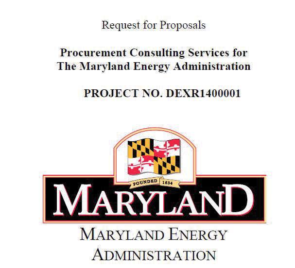

Commodities can be purchased from online catalogs if the buyer knows exactly what is needed for the task.
Complete the exercise by following these instructions:
Click the Parts menu and then click the link to the Hardware Catalog shown in Figure 12.11 "Parts Catalog".
In the Search box, type Lynch Pin and then press Enter. Refer to Figure 12.12 "Searching for a Part".
Notice the following characteristics:
Review your work and use the following rubric to determine its adequacy:
| Element | Best | Adequate | Poor |
|---|---|---|---|
| File name | Ch12CommoditiesStudentName.doc | .docx version | Student name not included |
| Locate commodities in online catalogs | Two screen captures; a description of how to navigate an online catalog in PDF format | Same as Best | Missing screens; inaccurate description |
Commodities can be services that are specifically defined and common enough to have standardized descriptions and quality. In this exercise, you download a template for writing an RFQ from the state of Massachusetts for requesting quotes on testing software for accessibility compliance.
Complete the exercise by following these instructions:
Scroll to the Preface page, as shown in Figure 12.13 "Description of RFQ Template".
Review your work and use the following rubric to determine its adequacy:
| Element | Best | Adequate | Poor |
|---|---|---|---|
| File name | Ch12RFQStudentName.doc | .docx version | Student name not included |
| Use an RFQ template obtained online | A screen capture that shows a link to the template in the Project Management folder in the bookmarks or favorites; screen capture of one of the first eight pages; reflective essay between one hundred and two hundred words on use of a RFQ template | Project Management folder does not show links from previous exercises | Missing screens; only one feature discussed; no page references |
If you need to rely on the vendor’s experience and expertise to solve a problem, you can request companies to submit proposals on how they would go about it. The state of Maryland provides a template for RFPs.
Complete the exercise by following these instructions:
In a browser, type http://energy.maryland.gov/documents/ProcurementConsultingServicesRFPFINAL.pdf. An RFP template used by the Maryland Energy Administration displays as a PDF file, as shown in Figure 12.14 "Source of RFQ Template".
Figure 12.14 Source of RFQ Template
Source: Courtesy of Maryland Energy Administration.
Review your work and use the following rubric to determine its adequacy:
| Element | Best | Adequate | Poor |
|---|---|---|---|
| File name | Ch12RFPStudentName.doc | .docx version | Student name not included |
| Use an RFP template obtained online | A screen capture that shows a link to the template in the Project Management folder in the bookmarks or favorites; screen capture of the preproposal conference; reflective essay between one hundred and two hundred words on the conference, refusal, and one other section with specific page references | Project Management folder does not show links from previous exercises | Missing screens; four sections not discussed individually; no page references |
The relationship between the project and its suppliers and vendors involves trust that both parties will keep their financial commitments. This trust may be based on past experience, but it can also be based on a third party’s rating of the financial health of the organization and its past behavior. For example, organizations with better credit ratings can negotiate lower prices with suppliers and vendors because there is less risk. One of the most popular rating agencies is D&B. In this exercise, you locate and review the types of financial reports that are available from D&B.
Complete the exercise by following these instructions:
In a browser, type http://www.dnb.com/us/customer_service/scores.html. The D&B web page displays, as shown in Figure 12.15 "D&B Ratings".
Explain what it would mean if a company had the following D&B ratings:
Review your work and use the following rubric to determine its adequacy:
| Element | Best | Adequate | Poor |
|---|---|---|---|
| File name | Ch12DBStudentName.doc | .docx version | Student name not included |
| Describe and interpret D&B financial reports using definitions online | A screen capture that shows a link to the template in the Project Management folder in the bookmarks or favorites; four screens that show the four tables; reflective essay between one hundred and two hundred words on use of D&B ratings; interpretation of example scores | Same as Best | Missing screens; incorrect interpretation of table; incorrect interpretation of ratings |